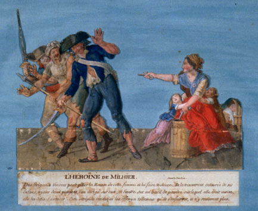

 |
| 30.
L’Héroïne de Milhier. [The Heroine Milhier]
Caption: Des Brigands vinrent pour piller la Maison de cette femme et lui faire vidence. Ils la trouvèrent entourée de ses Enfants, ayant deux pistolets, l’un dirigé sur eux, et l’autre sur un baril de poudre sur lequel elle était assise, elle les défia d’avancer! Cette intrépide résolution les effraya tellement qu’ils s’enfuirent, et n’y revinrent plus. Source: Photothèque des Musées de la Ville de Paris 2000CAR 1263A |